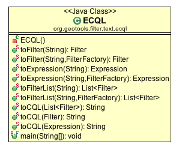

ECQL¶
The ECQL language is intended as an extension of CQL, thus you can write all predicates supported by CQL and use the new expression possibilities defined in the new syntax rules.
References
- ECQL Parser Design (wiki with BNF)
- GeoServer CQL Examples (geoserver)
ECQL Utility Class¶
The ECQL utility class is method compatible allowing you to use it as a drop-in replacement for CQL.
Running¶
As you can see above the ECQL class can be run on the command line.
It allows you to try out the ECQL examples on this page; and produces the XML Filter representation of the result.:
ECQL Filter Tester
"Seperate with \";\" or \"quit\" to finish)
>attr > 10
<?xml version="1.0" encoding="UTF-8"?>
<ogc:PropertyIsGreaterThan xmlns="http://www.opengis.net/ogc" xmlns:ogc="http://www.opengis.net/ogc" xmlns:gml="http://www.opengis.net/gml">
<ogc:PropertyName>attr</ogc:PropertyName>
<ogc:Literal>10</ogc:Literal>
</ogc:PropertyIsGreaterThan>
>quit
Bye!
Examples¶
Filter by Comparing Values
The CQL language limited us to referencing a propertyName against a more general expression.
ECQL allows you to use full expressions everywhere:
Filter filter = ECQL.toFilter("1000 <= population");
Filter filter = ECQL.toFilter("(under18YearsOld * 19541453 / 100 ) < (over65YearsOld * 19541453 / 100 )");
Filter filter = ECQL.toFilter("population BETWEEN 10000000 and 20000000");
Filter filter = ECQL.toFilter("area( Polygon((10 10, 20 10, 20 20, 10 10)) ) BETWEEN 10000 AND 30000");
Filter by a List of Features’ ID
The Filter XML format allows the definition of an Id Filter capturing a set of FeatureIDs (often representing a selection).
Using string as id:
Filter filter = ECQL.toFilter("IN ('river.1', 'river.2')");Using integer as id:
Filter filter = ECQL.toFilter("IN (300, 301)");We tried a couple of experiments, not all of them worked leaving us with the following deprecated syntax:
Filter filter = ECQL.toFilter("ID IN ('river.1', 'river.2')");Filter based in a set of values
The following filter selects the countries which have silver, oil or gold as principal mineral resource:
Filter filter = ECQL.toFilter("principalMineralResource IN ('silver','oil', 'gold' )");
Filter using a text pattern:
Filter for a text pattern using LIKE keyword:
Filter filter = ECQL.toFilter("cityName LIKE 'New%'");
Case insensitive example with ILIKE keyword:
Filter filter = ECQL.toFilter("cityName ILIKE 'new%'");
ECQL allows you to test any two expression, including literals:
Filter filter = ECQL.toFilter("'aabbcc' LIKE '%bb%'");
Filter by spatial relation:
The ability to use a full expression also applies to spatial operations allowing us to process a geometry using a function as in the following example:
Filter filter = ECQL.toFilter("DISJOINT(the_geom, POINT(1 2))"); Filter filter = ECQL.toFilter("DISJOINT(buffer(the_geom, 10) , POINT(1 2))"); Filter filter = ECQL.toFilter( "DWITHIN(buffer(the_geom,5), POINT(1 2), 10, kilometers)");The followning example shows how to make a filter using the RELATE geooperation. In this case, the DE-9IM pattern corresponds to the contains spatial relation, It will be true if the first geometry contains the second.
Filter filter = ECQL.toFilter( "RELATE(geometry, LINESTRING (-134.921387 58.687767, -135.303391 59.092838), T*****FF*)");
Filter by temporal relation:
The temporal predicates allow to establish the relation between two given instant of time, or between an instant and an interval of time. In the next sample, the during predicate is used to filter the cities where an earthquake has occurred between the specified dates:
During filter = (During) ECQL.toFilter("lastEarthQuake DURING 1700-01-01T00:00:00Z/2011-01-01T00:00:00Z");
In ECQL you can write a datetime expression in the left hand of the temporal predicate:
Filter filter = ECQL.toFilter("2006-11-30T01:00:00Z AFTER 2006-11-30T01:30:00Z");
in the Before predicate:
Filter filter = ECQL.toFilter("2006-11-30T01:00:00Z BEFORE 2006-11-30T01:30:00Z");
in the During predicate:
Filter filter = ECQL.toFilter("2006-11-30T01:00:00Z DURING 2006-11-30T00:30:00Z/2006-11-30T01:30:00Z ");
The following example presents a time predicate that includes the UTC time zone (GMT +3) in date-time expression:
Filter filter = ECQL.toFilter("2006-11-30T01:00:00+03:00 DURING 2006-11-30T00:30:00+03:00/2006-11-30T01:30:00+03:00 ");
Filter Nulls:
Filter filter = ECQL.toFilter(" Name IS NULL"); Filter filter = ECQL.toFilter("centroid( the_geom ) IS NULL");Property Exist Predicate:
Filter resultFilter = ECQL.toFilter("aProperty EXISTS");Expression
Expressions support is unchanged:
Expression expr = ECQL.toExpression("X + 1");Filter list
Filter list is still supported using a ”;” to separate entries:
List<Filter> list = ECQL.toFilterList("X=1; Y<4");
Filter with date literals:
Filter filter = ECQL.toFilter("foo = 1981-06-20"); Filter filter = ECQL.toFilter("foo <= 1981-06-20T12:30:01Z");